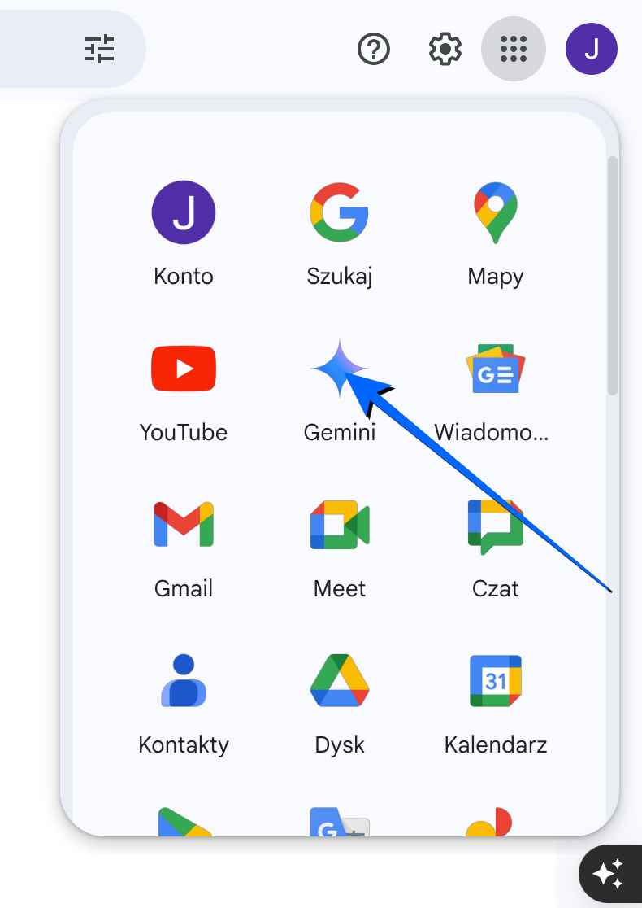
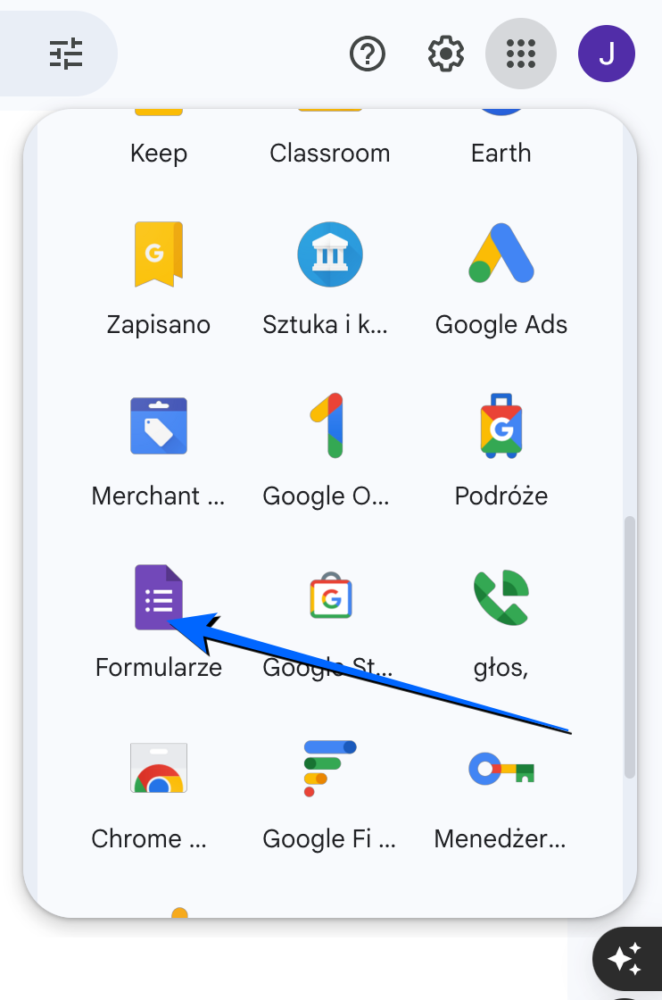
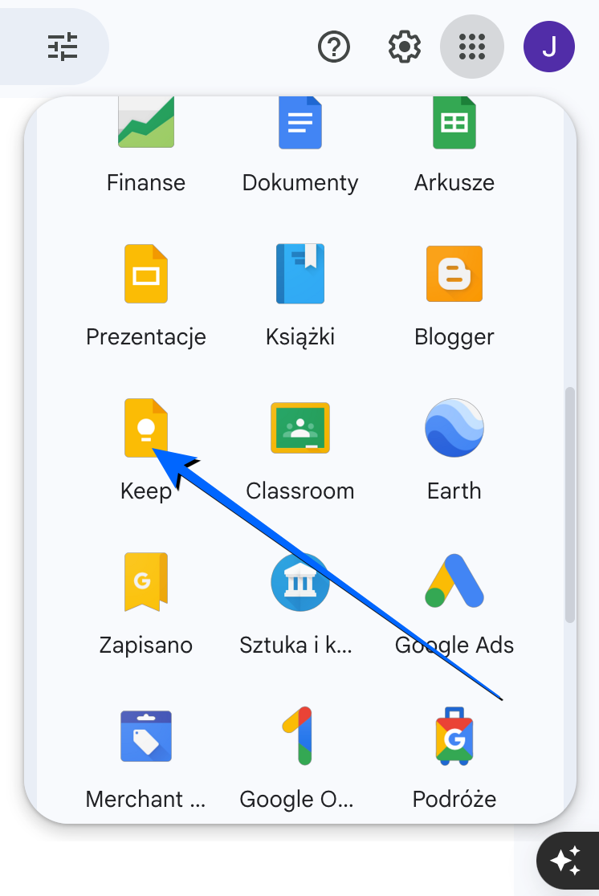

Laboratorium 2: Google Workspace (Gemini, Keep i Forms).
Zaloguj się na swoje konto Google, otwórz Google Drive oraz uporządkuj swoje pliki. Postępuj zgodnie z poniższym filmikiem.
Google Gemini to bardzo zaawansowany model językowy. Wyobraź sobie go jako inteligentnego asystenta, który potrafi: rozumieć i generować tekst, przetwarzać informacje, uczyć się i dostosowywać.

Otwórz Google Gemini oraz wpisz zapytanie (prompt). Skopiuj poniższą treść, a następnie wklej ją do chat'u Gemini:
"Napisz artykuł o wpływie aktywności fizycznej na zdrowie, uwzględniając siłownię, bieganie i pływanie."
Skopiuj wygenerowany tekst i wklej go do nowego dokumentu Google Docs. Edytuj treść tak, aby miała dla Ciebie sens. Możesz zmienić przykłady, dodać swoje doświadczenia lub usunąć niepotrzebne fragmenty. Plik powinien posiadać odpowiednią nazwę: Wpływ aktywności fizycznej na zdrowie.
Sformatuj dokument według poniższych zasad (twoje tytuły mogą wyglądać zupełnie inaczej, nie wiemy, jakie dane wygeneruje model językowy Gemini):
Zapisz dokument w folderze lab02.
Google Forms to bezpłatne narzędzie online, które umożliwia tworzenie profesjonalnych ankiet, testów, formularzy rejestracyjnych oraz innych interaktywnych kwestionariuszy. Dzięki intuicyjnemu interfejsowi użytkownika, nawet osoby bez specjalistycznej wiedzy technicznej mogą z łatwością projektować i rozpowszechniać formularze, a następnie analizować zebrane odpowiedzi.
Otwórz Google Forms i utwórz nowy formularz zatytułowany Nawyki sportowe studentów - ankieta.

Dodaj następujące pytania:
Udostępnij formularz koledze / koleżance w grupie. Następnie przeanalizuj wyniki.
Google Keep to cyfrowy notes, który pozwala szybko zapisywać myśli, tworzyć listy zadań, dodawać zdjęcia. Służy do organizacji codziennych spraw, przypominania o ważnych zadaniach i łatwego dostępu do notatek z dowolnego urządzenia.
Otwórz Google Keep oraz dodaj notatki.

Twoje zadanie będzie polegało na sporządzeniu odpowiednich notatek. Skopiuj poniższą treść do własnych notatek. Ustaw odpowiednie etykiety oraz tła dla notatek.
Notatka 1:
Tytuł: "Sportowe kino motywacji"
Etykieta: Motywacja, Sport, Filmy (to są oddzielne etykiety!).
Powiadomienie: Sobota, 20:00.
Kolor tła: Pomarańczowy.
Notatka 2:
Tytuł: "Tygodniowy plan treningowy"
Etykieta: Sport, Trening (to są oddzielne etykiety!).
Kolor tła: Zielony.
Notatka 3:
Tytuł: "Zdrowe posiłki na cały dzień"
Etykieta: Dieta, Jedzenie, Zdrowie (to są oddzielne etykiety!).
Kolor tła: Niebieski.
Wiem, że nic nie wiem
~Sokrates